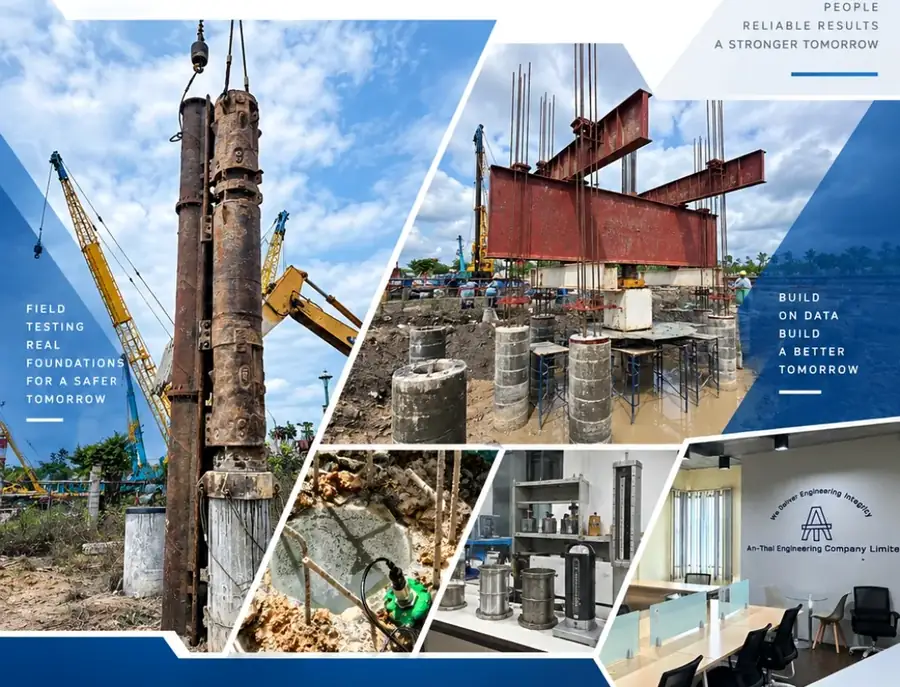
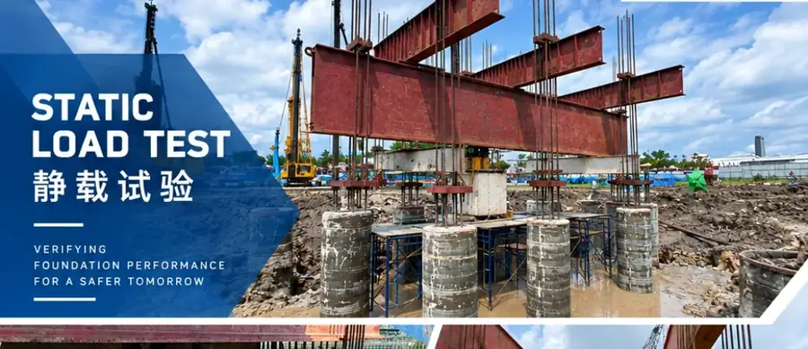
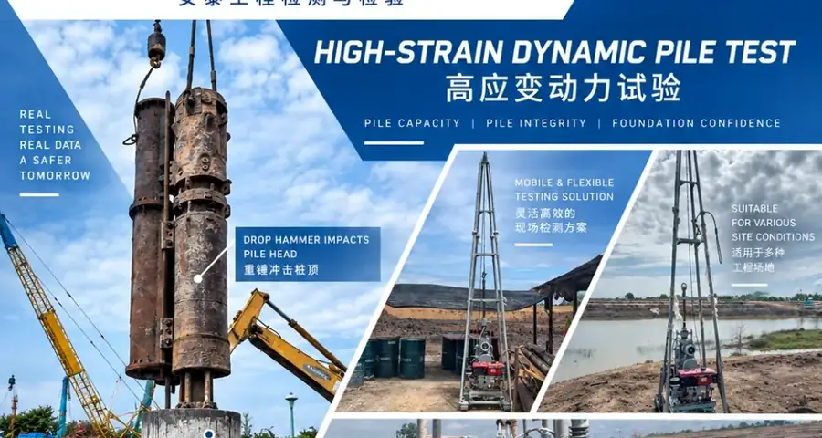
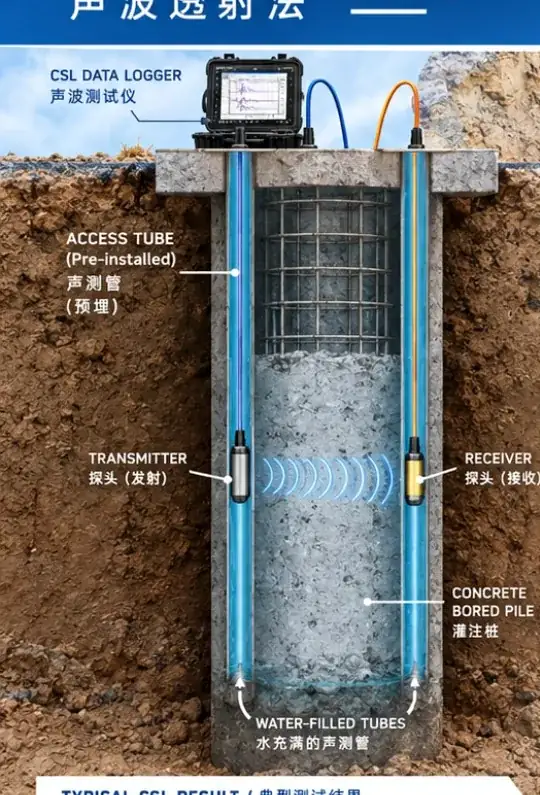
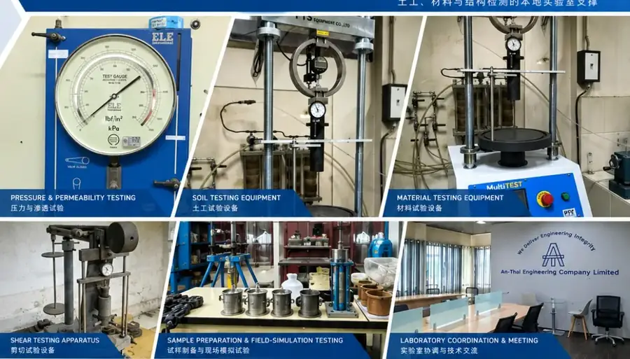

FROM
GROUND TO
STRUCTURE
Engineering testing and inspection
with equipment support built on field practice.
We test in the field, therefore we understand the equipment.
THAILAND-BASED ENGINEERING SUPPORTFour routes.
One engineering contact.
Start from the project need. Before quotation or commitment, AN-THAI confirms its own scope and any partner or manufacturer responsibility.
Testing, geotech &
design coordination
Pile testing, geotechnical investigation, design conversion and Thai submission coordination.
↗ 02Project cooperationSteel / space-structure cooperation
Special steel, long-span and space-structure opportunities where cross-border supply and engineering coordination may be relevant.
↗ 03Equipment cooperationCNBM powder-equipment cooperation
Powder-process and grinding-related equipment cooperation based on the project duty.
↗ 04Testing instrumentsMeasurement equipment
& technical support
Pile, geotechnical, structural/material and measurement instruments for engineering teams.
↗One chain of evidence,
from site condition
to engineering decision.
AN-THAI brings the work together around the information a project actually needs: the ground, the test method, the measurement record and a traceable technical outcome.
View capabilities →- 01
Investigate
Understand ground, structure and access conditions before a method is selected.
- 02
Measure
Apply appropriate field, laboratory or specialist testing methods.
- 03
Interpret
Connect measurement records with engineering judgement and project requirements.
- 04
Deliver
Prepare the agreed technical output for the next project decision.
Methods that begin
with the question.
Each test route is planned around its purpose, the site constraints and the evidence needed at the end.

Static Load Test

High-Strain Dynamic Test

Crosshole Sonic Logging

Equipment choices
made by people
who test.
We start with the measurement task, not a catalogue. That means application, sensor compatibility, data acquisition, setup and technical support are considered together.
View equipment categoriesEngineering support
you can brief internally.
Download the bilingual AN-THAI company profile for our service scope, technical direction and contact details.
COMPANY PROFILECN / EN · PDF · 5.3 MB↓
Tell us what you need
to build, test or source.
Send the project location, business route, drawings/specification or equipment requirement. We will begin by confirming the technical scope and who is responsible for what.
Request a quote →